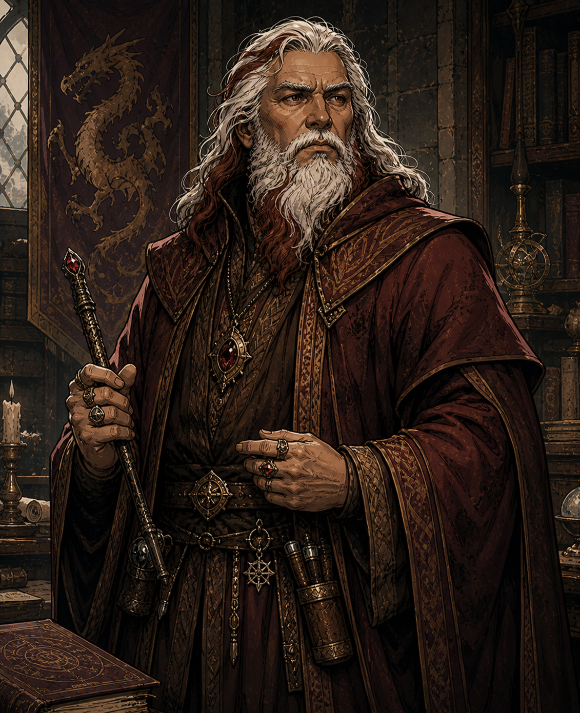

Vangerdahast Aeiulvana
Cargo Antiguo Mago Real de Cormyr Afiliación War Wizards; Council of Mages; Corona de Cormyr Raza y clase de referencia Humano; mago 18 (hoja de 1372 DR) Alineamiento Legal neutral Edad humana Nacido en 1012 DR;362 años por diferencia al 1374, conlongevidad mágica Sucesora Caladnei Fuentes Cormyr (AD&D 2e) · Cormyr: A Novel · Death of the Dragon · Crusade · Volo’s Guide to Cormyr · Azure Bonds · The Wyvern’s Spur · The Siege · The Sorcerer · Elminster’s Daughter
En 1374, el puesto de Mago Real ya no pertenece a Vangerdahast. Caladnei ocupa el lugar desde el que él sostuvo durante décadas a la Corona, vigiló a otros magos y decidió qué peligros debían conocer los Obarskyr. Su retiro no vuelve pequeña su sombra. Para compren der las lealtades, las sospechas y los hábitos de la corte todavía hay que contar con el hombre que educó a Azoun IV y acompañó sus decisiones hasta la muerte. Vangerdahast acostumbró al reino a esperar respuestas de su magia; también lo acostumbró a descubrir demasiado tarde qué preguntas había preferido contestar a solas.1
El muchacho de Espar
Su camino comenzó en Espar, frente a un espectáculo de feria. Un prestidigitador lo fascinó con sus trucos y le hizo desear aquella vida. El descubrimiento de que el artista no practicaba magia verdadera no acabó con la ambición del muchacho: le mostró que existía algo más allá del engaño de los ojos. Vangerdahast buscó en Shadowdale a Elminster. El anciano no lo convirtió de inmediato en discípulo residente, pero lo orientó hacia el aprendizaje y le pidió que regresara cuando hubiese avanzado.2
De aquel regreso quedaron enseñanzas que Vangerdahast no divulgó. Más tarde Rhigaerd II lo atrajo a la corte prometiéndole recursos y lo puso a educar al príncipe Azoun. Historia, ética y el empleo político y militar de la magia entraron en las lecciones. El alumno podía rebelarse, sobre todo cuando la moral del tutor contrariaba sus deseos; la resistencia no impidió que el mago terminara convertido en su consejero más cercano. En 1336, con la subida de Azoun al trono, llegaron los títulos formales y el mando sobre los War Wizards.2
La protección ya lo había llevado a seguir al joven príncipe fuera de los salones. En 1324 viajó con él bajo otra identidad: Borl acompañaba a Balin, nombre tras el que se ocultaba Azoun. Aquellas aventuras no eliminaban la relación de tutor y vigilante. El futuro rey podía alejarse de las ceremonias, pero resultaba mucho más difícil dejar atrás al hombre encargado de mantenerlo vivo.3
Un reino de nombres y visitas inesperadas
Durante su etapa al frente de la magia de Cormyr, Vangerdahast no se limitó a combatir. Conservaba una gran biblioteca de nombres, símbolos, residencias y desplazamientos de magos. Exigía el registro de quienes alcanzaban suficiente poder y completaba los informes con una red de agentes mágicos y ordinarios. El registro no era un papel que pudiera olvidarse después de firmarlo: el Mago Real procuraba mantenerlo al día incluso cuando su dueño prefería no hacerlo.4
Las visitas sorpresa daban a ese trabajo una presencia física. Un hechicero poderoso podía retirarse convencido de no deber explicaciones y encontrarse un día con Vangerdahast a la puerta. El efecto buscado no consistía solo en descubrir una falta. La posibilidad de la visita debía disuadir a otros de anteponer sus ambiciones al reino. Su reputación creció alrededor de esa vigilancia hasta hacer parecer que conocía más secretos de los que cualquier hombre podía reunir.4
También presidía reuniones y atendía la formación del cuerpo. Laspeera ocupaba su lugar cuando estaba ausente. En Stormhaven House, la escuela secreta de Espar, imponía disciplina a quienes se preparaban para servir. El mismo lugar donde había comenzado su curiosidad por la magia quedó unido a una estructura que enseñaba historia, política y responsabilidad a los nuevos War Wizards.5
La amistad del rey
Azoun no lo trataba como una herramienta a la que llamar solo en las emergencias. El Mago Real era casi parte de la familia, había educado a sus hijas y compartía con él consultas, discusiones y descansos. En 1360, mientras el rey miraba al exterior y pensaba en la guerra, Vangerdahast podía permanecer encorvado sobre un tablero de ajedrez. Parecía haber pasado unos cincuenta inviernos; había vivido bastante más de ochenta. Su magia había contenido durante años las señales visibles de la edad. Su nacimiento se remonta a 1012 DR, mucho antes de lo que sugería aquel rostro.67
La intimidad también tuvo caminos y tabernas. Vangerdahast cambiaba el aspecto del rey para que pudiera recorrer su reino de incógnito, mientras Alusair ayudaba a despejar la agenda de palacio. Así Azoun escuchaba y veía por sí mismo lo que los informes podían ocultar. En Eveningstar, el mago solía acompañarlo entre paseos, bebida y baile; allí no siempre lograban mantener la distancia que un disfraz pretendía levantar entre el soberano y sus vecinos.8
Proteger al amigo y servir al reino eran propósitos cercanos, pero no idénticos. La Corona necesitaba que alguien preservara al rey; también necesitaba que ese protector no acabara sustituyendo con sus decisiones la voluntad del soberano. Vangerdahast vivió sobre esa frontera. Su seguridad de saber qué convenía a Cormyr podía resultar tranquilizadora cuando la amenaza estaba fuera y opresiva cuando quien discrepaba era una de las personas a las que decía proteger.9
Los años en que la magia no bastó
En 1357 participó en la investigación de Alias y en las negociaciones que siguieron a la presencia de una dragona cerca de Suzail. Giogi Wyvernspur conoció tanto su autoridad como la incomodidad de convertirse en enviado para indagaciones lejanas. La misma protección del rey justificaba preguntas insistentes, trabajos que otros debían ejecutar y decisiones cuyo alcance pocas veces se explicaba al principio.10
En 1369, cuando el veneno amenazó a Azoun, Vangerdahast encontró una solución que exigió separar y manipular su sangre. La recuperación no se anunció en cuanto fue posible: permitió que los enemigos de la Corona se descubrieran mientras el rey seguía pareciendo vulnerable. La paciencia, el engaño y el conocimiento arcano funcionaron juntos. El resultado salvó al soberano y quebró a conspiradores, pero también confirmó la costumbre de esconder una parte decisiva de lo que ocurría.11
En 1371 el poder encontró un límite definitivo. Después de la batalla contra Nalavarauthatoryl, Vangerdahast intentó prolongar la vida de Azoun con el último poder que conservaba de Amedahast. No consiguió salvarlo. El rey, consumido por las heridas, todavía lo llamó amigo y defensor de Cormyr. El mago que había acompañado su juventud tuvo que quedarse junto al cuerpo después de que el aliento cesara.12
Podía buscar una alteración todavía mayor, pero entendió lo que arriesgaba. Cambiar el pasado para impedir aquella tragedia podía borrar también el reino al que había consagrado su vida. Dejó el anillo de deseos con Azoun, lo ocultó con magia y renunció a usarlo. Luego anunció la muerte. Tanalasta también había muerto y el nuevo rey era un niño de pocos días: tras las lágrimas volvían a esperar las preguntas de la sucesión.13
La catástrofe de Tilverton, en 1372, añadió otra herida. Vangerdahast participó en la lucha, agotó sus fuerzas y tuvo que recibir ayuda. Alusair quería recuperar al hombre capaz de responder; Caladnei lo sostuvo cuando su mente parecía volver a órdenes y batallas de otro tiempo. Después apareció ella en el puesto de Maga Real. El cambio no era una simple ausencia en una reunión: Cormyr debía apren der a vivir sin que toda crisis terminara ante Vangerdahast.14
El retiro y la difícil renuncia al mando
En 1373, quienes llegaron a su refugio encontraron al anciano encorvado, con túnicas sucias, sandalias y una barba gris blanquecina que se extendía en todas direcciones. Había comida mal atendida, utensilios acumulados y un hombre capaz de recibir una visita inesperada con indignación. La vida apartada de la corte le daba libertad, pero no había deshecho ni su orgullo ni el deseo de dejar una obra que sobreviviera a su muerte.15
Caladnei descubrió que ser elegida sucesora no significaba haber recibido todos sus secretos. El antiguo Mago Real seguía decidiendo qué podía saber su reemplazo. La discusión entre ambos fue dolorosa precisamente porque había respeto: ella podía reconocer lo que él había hecho por Cormyr y negarse a ser una subordinada dócil. Vangerdahast, por su parte, seguía creyendo que comprendía las necesidades del reino mejor que quienes debían continuarlo.16
Aun así, algo cambió en él. Cuando tuvo a una adversaria a su merced, rechazó convertir su muerte en la solución más cómoda. Había visto demasiadas dificultades como para seguir disfrutando de resolverlas mediante el asesinato. Llegó a decir que las opiniones distintas no hacían de los demás enemigos a los que hubiese que matar. Era una renuncia más pequeña que entregar un título y, quizá por eso, más difícil: obligaba a dejar de ejercer poder justo cuando tenía ocasión de hacerlo.17
Su legado no se compren de solo enumerando victorias. Vangerdahast preservó al rey, ordenó la vigilancia de la magia y defendió al reino durante décadas. También escondió decisiones, impuso su juicio y dejó a sus sucesores problemas cuyo conocimiento había retenido. Quien lo busque en 1374 debe empezar por aceptar que ya no está en su antiguo puesto. El reino al que quiso proteger continúa, y otra persona tiene ahora que responder por él.116
Rumores
Durante sus años en la corte circulaban dos versiones de su interés por los Helmlands: unos lo creían dispuesto a borrarlos del continente; otros, a trasladarlos lejos de Cormyr. La historia decía mucho sobre lo que la gente esperaba de él: incluso una extensión de tierra maldita podía parecer un problema que el Mago Real resolvería con suficiente tiempo y una magia que nadie más comprendía.18
Estadísticas (D&D 3.5)
Hoja de juego · 1372 DR
| Tamaño/Tipo | Humanoide Mediano (humano) |
|---|---|
| Alineamiento | Legal neutral |
| Edad | Unos 360 años en 1372 (nació en 1012); la magia contiene su envejecimiento |
| Características | Fue 6, Des 14, Con 16, Int 31, Sab 17, Car 13 |
| Dados de Golpe | (13d4)+(5d4)+54 (109 PG) |
| Iniciativa | +6 |
| Velocidad | 9 m |
| Clase de Armadura | 20, toque 15, desprevenido 18 |
| Ataque base/Presa | +8/+6 |
| Espacio/Alcance | 1,5 m/1,5 m |
| Salvaciones | Fort +15, Ref +11, Vol +19 |
| Dotes | Combat CastingYou are adept at casting spells in combat. You get a +4 bonus on Concentration checks made to cast a spell or use a spell-like ability while on the defensive or while you are grappling or pinned.Player's Handbook, p.92, Craft WandYou can create wands, which hold spells (see the Dungeon Master's Guide for rules on wands). You can create a wand of any 4th-level or lower spell that you know. Crafting a wand takes one day for each 1,000 gp in its base price. The base price of a wand is its caster level ? the spell level ? 750 gp. to craft a…Player's Handbook, p.92, Craft Wondrous ItemYou can create a wide variety of magic items, such as a crystal ball or a flying carpet. You can create any wondrous item whose prerequisites you meet (see the Dungeon Master's Guide for prerequisites and other information on wondrous items). Enchanting a wondrous item takes one day for each 1,000 gp in its price.…Player's Handbook, p.92, Empower SpellYou can cast spells to greater effect. All variable, numeric effects of an empowered spell are increased by one-half. Saving throws and opposed rolls are not affected, nor are spells without random variables. An empowered spell uses up a spell slot two levels higher than the spell's actual level.Player's Handbook, p.93, Enlarge SpellYou can cast spells farther than normal. You can alter a spell with a range of close, medium, or long to increase its range by 100%. An enlarged spell with a range of close now has a range of 50 ft. + 5 ft./level, while medium-range spells have a range of 200 ft. + 20 ft./level and long-range spells have a range of…Player's Handbook, p.94, Extend SpellYou can cast spells that last longer than normal. An extended spell lasts twice as long as normal. A spell with a duration of concentration, instantaneous, or permanent is not affected by this feat. An extended spell uses up a spell slot one level higher than the spell's actual level.Player's Handbook, p.94, Greater Spell Focus (Enchantment)Choose a school of magic to which you already have applied the Spell Focus feat. Your spells of that school are now even more potent than before. Add +1 to the Difficulty Class for all saving throws against spells from the school of magic you select. This bonus stacks with the bonus from Spell Focus.Player's Handbook, p.94, Greater Spell PenetrationYour spells are remarkably potent, breaking through spell resistance more readily than normal. You get a +2 bonus on caster level checks made to overcome a creature's spell resistance. This bonus stacks with the one from Spell Penetration.Player's Handbook, p.94, Improved InitiativeYou can react more quickly than normal in a fight.Unearthed Arcana, p.96, Martial Weapon Proficiency (Longsword)You make attack rolls with the selected weapon normally. Normal: When using a weapon with which you are not proficient, you take a -4 penalty on attack rolls.Player's Handbook, p.97, Maximize SpellYou can cast spells to maximum effect. All variable, numeric effects of a spell modified by this feat are maximized. Saving throws and opposed rolls are not affected, nor are spells without random variables. A maximized spell uses up a spell slot three levels higher than the spell's actual level. An empowered,…Player's Handbook, p.97, Quicken SpellYou can cast a spell with a moment's thought. Casting a quickened spell is an swift action. You can perform another action, even casting another spell, in the same round as you cast a quickened spell. You may cast only one quickened spell per round. A spell whose casting time is more than 1 full round action cannot…Player's Handbook, p.98, Scribe ScrollYou can create scrolls, from which you or another spellcaster can cast the scribed spells. See the Dungeon Master's Guide for rules on scrolls. You can create a scroll of any spell that you know. Scribing a scroll takes one day for each 1,000 gp in its base price. The base price of a scroll is its spell level ? its…Player's Handbook, p.99, Skill Focus (Spellcraft)Choose a skill, such as Move Silently. You have a special knack with that skill.Unearthed Arcana, p.100, Spell Focus (Enchantment)Your spells of a chosen school of magic are more potent than normal. Add +1 to the Difficulty Class for all saving throws against spells from the selected school of magic.Player's Handbook, p.100, Spell PenetrationYour spells are especially potent, breaking through spell resistance more readily than normal. You get a +2 bonus on caster level checks (1d20 + caster level) made to overcome a creature's spell resistance.Player's Handbook, p.100, Widen SpellYou can increase the area of your spells. You can increase the are of your spells.Magic of Faerûn, p.23 |
| Habilidades | Artesanía (alquimia)Fabricar objetos de un oficio.21 rangos · Int +31, ConcentraciónMantener un conjuro o una acción pese a heridas y distracciones.21 rangos · Con +24, Conocimiento de conjurosIdentificar conjuros y objetos mágicos.21 rangos · Int +36, Descifrar escrituraDescifrar escrituras antiguas, extrañas o cifradas.14 rangos · Int +24, Saber (arcano)Saber erudito de un campo concreto.21 rangos · Int +31, Saber (historia)Saber erudito de un campo concreto.21 rangos · Int +31, Saber (los planos)Saber erudito de un campo concreto.21 rangos · Int +31, Saber (nobleza y realeza)Saber erudito de un campo concreto.21 rangos · Int +31 |
| Cualidades especiales | Enhanced Spell AreaMagic of Faerûn, MoF, FamiliarA wizard can obtain a familiar. A familiar is a magical beast that resembles a small animal and is unusually tough and intelligent. The creature serves as a companion and servant.Player's Handbook, p.57 |
| Idiomas | Chondathan, Common, Draconic, Dwarven, Elven |
0: Arcane MarkInscribes a personal rune (visible or invisible).0 m, Detect MagicDetects spells and magic items within 60 ft.18 m, LightObject shines like a torch.Touch, Mage Hand5-pound telekinesis.Close (21 m), MessageWhispered conversation at distance.Medium (84 m), PrestidigitationPerforms minor tricks.CD 20 · 3 m · See text, Read MagicRead scrolls and spellbooks.Personal, ResistanceSubject gains +1 on saving throws.CD 20 · Touch · Will negates (harmless); 1.º: AlarmWards an area for (CASTERLEVEL*2) hours.Close (21 m), Charm PersonMakes one person your friend.CD 23 · Close (21 m) · Will negates, Comprehend LanguagesYou understand all spoken and written languages.Personal, Feather FallObjects or creatures fall slowly.CD 21 · Close (21 m) · Will negates (harmless) or Will negates (object), IdentifyDetermines properties of magic item.Touch, Mage ArmorGives subject +4 armor bonus.CD 21 · Touch · Will negates (harmless), Magic Missile(min((CASTERLEVEL+1)/2,5)) missiles that do 1d4+1 damage each.Medium (84 m), ShieldInvisible disc gives +4 to AC, blocks magic missiles.Personal; 2.º: Arcane LockMagically locks a portal or chest.Touch, Detect ThoughtsAllows 'listening' to surface thoughts.CD 22 · 18 m · Will negates; see text, InvisibilitySubject is invisible for (CASTERLEVEL) minutes or until it attacks.CD 22 · Personal or touch · Will negates (harmless) or Will negates (harmless, object), KnockOpens locked or magically sealed door.Medium (84 m), Locate ObjectSenses direction toward object (specific or type).Long (336 m), Mirror ImageCreates decoy duplicates of you [1d4 +(CASTERLEVEL/3), max 8].Personal; see text, See InvisibilityReveals invisible creatures or objects.Personal; 3.º: Clairaudience/ClairvoyanceHear or see at a distance for (CASTERLEVEL) minutes.Long (336 m), Dispel MagicCancels magical spells and effects.Medium (84 m), FlySubject flies at speed of 60 ft.CD 23 · Touch · Will negates (harmless), Haste(CASTERLEVEL) creatures moves faster, +1 on attack rolls, AC, and Reflex saves.CD 23 · Close (21 m) · Fortitude negates (harmless), Hold PersonParalyzes one humanoid for (CASTERLEVEL) rounds.CD 25 · Medium (84 m) · Will negates; see text, Lightning BoltElectricity deals (min(CASTERLEVEL,10))d6 damage.CD 23 · 36 m · Reflex half, SuggestionCompels subject to follow stated course of action.CD 25 · Close (21 m) · Will negates, TonguesSpeak any language.CD 23 · Touch · Will negates (harmless); 4.º: Arcane EyeInvisible floating eye moves 30 ft./round.Unlimited, Charm MonsterMakes monster believe it is your ally.CD 26 · Close (21 m) · Will negates, Dimension DoorTeleports you short distance.CD 24 · Long (336 m) · None and Will negates (object), Geas, LesserCommands subject of 7 HD or less.CD 26 · Close (21 m) · Will negates, Invisibility, GreaterAs invisibility, but subject can attack and stay invisible.CD 24 · Personal or touch · Will negates (harmless), ScryingSpies on subject from a distance.CD 24 · See text · Will negates, StoneskinIgnore 10 points of damage per attack.CD 24 · Touch · Will negates (harmless); 5.º: DismissalForces a creature to return to native plane.CD 25 · Close (21 m) · Will negates; see text, Dominate PersonControls humanoid telepathically.CD 27 · Close (21 m) · Will negates, FeeblemindSubject's Int and Cha drop to 1.CD 27 · Medium (84 m) · Will negates; see text, PermanencyMakes certain spells permanent.See text, TelekinesisMoves object, attacks creature, or hurls object or creature.CD 25 · Long (336 m) · Will negates (object) or None; see text, TeleportInstantly transports you as far as (CASTERLEVEL*100) miles.CD 25 · Personal and touch · None and Will negates (object), Wall of ForceAn Invisible Wall, immune to damage.Close (21 m); 6.º: Chain Lightning(min(CASTERLEVEL,20))d6 damage; (min(CASTERLEVEL,20)) secondary bolts each deal half damage.CD 26 · Long (336 m) · Reflex half, ContingencySets trigger condition for another spell.Personal, Dispel Magic, GreaterAs dispel magic, but +20 on check.Medium (84 m), Geas/QuestAs lesser geas, plus it affects any creature.Close (21 m), Globe of InvulnerabilityAs lesser globe of invulnerability, plus 4th-level spell effects.3 m, True SeeingLets you see all things as they really are.CD 26 · Touch · Will negates (harmless); 7.º: ForcecageCube or cage of force imprisons all inside.Close (21 m), Hold Person, MassAs hold person, but all within 30 ft.CD 29 · Medium (84 m) · Will negates; see text, Limited WishAlters reality-within spell limits.CD 27 · See text · None; see text, Scrying, GreaterAs scrying, but faster and longer.CD 27 · See text · Will negates, Spell TurningReflect 1d4+6 spell levels back at caster.Personal, Teleport, GreaterAs teleport, but no range limit and no off-target arrival.CD 27 · Personal and touch · None and Will negates (object); 8.º: Charm Monster, MassAs charm monster, but all within 30 ft.CD 30 · Close (21 m) · Will negates, Dimensional LockYou create a field that completely blocks bodily extradimensional travel. Forms of movement barred include astral projection, blink, dimension door, ethereal jaunt, etherealness, gate, maze, phasing, plane shift, shadow walk, teleport, and similar spell-like or psionic abilities. The dimensional lock does not…Medium (84 m), Mind BlankSubject is immune to mental/emotional magic and scrying.CD 28 · Close (21 m) · Will negates (harmless), Moment of PrescienceYou gain insight bonus on single attack roll, check, or save.Personal, Protection from SpellsConfers +8 resistance bonus.CD 28 · Touch · Will negates (harmless); 9.º: Dominate MonsterAs dominate person, but any creature.CD 31 · Close (21 m) · Will negates, Foresight'Sixth sense' warns of impending danger.CD 29 · Personal or touch · None or Will negates (harmless), Mordenkainen's DisjunctionDispels magic, disenchants magic items.CD 29 · Close (21 m) · Will negates (object), Time StopYou act freely for 1d4+1 rounds.Personal
Staff of the MagiA long wooden staff, shod in iron and inscribed with sigils and runes of all types, this potent artifact contains many spell powers and other functions. Some of its powers use charges, while others don't. The following powers do not use charges: . Detect magic . Enlarge person (Fortitude DC 15 negates) . Hold…Dungeon Master's Guide, p.280, Headband of Intellect +6This device is a light cord with a small gem set so that it rests upon the forehead of the wearer. The headband adds to the wearer's Intelligence score in the form of an enhancement bonus of +6. This enhancement bonus does not earn the wearer extra skill points when a new level is attained; use the unenhanced…Dungeon Master's Guide, p.258, Bracers of Armor +5These items appear to be wrist or arm guards. They surround the wearer with an invisible but tangible field of force, granting him an armor bonus of +5, just as though he were wearing armor. Both bracers must be worn for the magic to be effective. Moderate conjuration; CL 7thDungeon Master's Guide, p.250, Ring of Protection +3This ring offers continual magical protection in the form of a deflection bonus of +3 to AC. Faint abjuration; CL 5thDungeon Master's Guide, p.232, Ring of Wizardry IVA ring of wizardry IV doubles 4th-level spellsDungeon Master's Guide, p.233, Cloak of Resistance +4These garments offer magic protection in the form of a +4 resistance bonus on all saving throws (Fortitude, Reflex, and Will). Faint abjuration; CL 5thDungeon Master's Guide, p.253, Amulet of Health +4This amulet is a golden disk on a chain. It usually bears the image of a lion or other powerful animal. The amulet grants the wearer an enhancement bonus to Constitution of +2, +4, or +6. Moderate transmutation; CL 8thDungeon Master's Guide, p.246, Gloves of Dexterity +4Dexterity: These thin leather gloves are very flexible and allow for delicate manipulation. They add to the wearer's Dexterity score in the form of an enhancement bonus of +4. Both gloves must be worn for the magic to be effective. Moderate transmutation; CL 8thDungeon Master's Guide, p.257, Royal BootstickVarilla corta, oculta en la bota, con varias gemas de paso engarzadas: abre las protecciones de la Corona (aposentos reales, arsenales, cámaras) sin cambiar de piedra. Poderes de una piedra de paso (no se acumulan). La usan el rey, el Mago Real y los altos mandos. Moderada abjuración; NL 9Adaptación de 2e a 3.5 · VGC p.237, War Wizard Cloakconstant Endure Elements (Cold), Darkvision, Feather FallMagic of Faerûn, p.167
Hoja calculada con PCGen (D&D 3.5) · 1372 DR · descargar .pcg
Secretos (DM)
El retiro de 1373 escondía un proyecto para sustituir a los Lords Who Sleep por dragones ligados en estasis. Sus diseños incluían portales, palabras de llamada y sustancias de activación; todavía no había resuelto todas las condiciones de obediencia ni las protecciones de los guardianes. Joysil temía que la difusión de esos procedimientos permitiera esclavizar a otros dragones.19
Vangerdahast terminó vinculando las ligaduras a su propia vida y se ofreció a morir para acabar con la amenaza. Elminster propuso otra salida: transformarlo en dragón y hacerlo guardián de Cormyr. Joysil aceptó acompañarlo voluntariamente como consorte. La ayuda de los Elegidos requirió días de trabajo. Al cierre de 1373 se inició así una nueva forma de servicio, que no debe confundirse con su antiguo puesto humano de Mago Real.20
Myrmeen Lhal, que había permanecido con él como testigo y vigilancia de la Corona, se convirtió en su compañera amorosa. Ella decidió conservar su humanidad y ofreció tener y criar a su heredero. El nacimiento de Ganrahast se sitúa en 1373 en una cronología del reino; no se confunde esa fecha con la del diálogo en que Myrmeen hace su ofrecimiento.21
Su supuesta debilidad tampoco era toda la verdad. Mystra advirtió a Elminster que Vangerdahast no estaba tan falto de fuerzas ni de memoria como había hecho creer a Caladnei. Eso no demuestra invulnerabilidad: sí vuelve peligroso juzgarlo solo por su aspecto.22
Después de 1374
Ganrahast llegará a recibir formación para asumir responsabilidades de Mago Real en una época posterior. En 1374 ese destino pertenece al futuro; no se lo trata como titular durante su infancia.23
Footnotes
-
Cormyr (AD&D 2e), pp. 12,43–45,60–61; The Sorcerer, p. 10; Elminster’s Daughter, pp. 137–150. Continuidad editorial a 1374 desde el desenlace de 1373. ↩ ↩2
-
Cormyr: A Novel, pp. 360–369. ↩
-
Cormyr (AD&D 2e), p. 60; Volo’s Guide to Cormyr, p. 140. ↩
-
Cormyr (AD&D 2e), pp. 43–45; Crusade, p. 1. ↩
-
Forgotten Realms Wiki → Dungeon 198, Cormyr Royale: The Royal Court of the Forest Kingdom, p.54; actualiza 1224 DRa 1012 DR. ↩
-
Cormyr (AD&D 2e), p. 44; Volo’s Guide to Cormyr, p. 144. ↩
-
Cormyr (AD&D 2e), pp. 43–45; The Wyvern’s Spur, p. 45; Elminster’s Daughter, pp. 143–149. ↩
-
Azure Bonds, pp. 100–105,168; The Wyvern’s Spur, p. 45. ↩
-
Cormyr: A Novel, pp. 398–402. ↩
-
Death of the Dragon, pp. 355–357. ↩
-
Death of the Dragon, pp. 366–367. ↩
-
The Siege, pp. 251,256–258; The Sorcerer, p. 10. ↩
-
Elminster’s Daughter, pp. 137–143. ↩
-
Elminster’s Daughter, pp. 240–241. ↩
-
Cormyr (AD&D 2e), p. 7. ↩
-
Elminster’s Daughter, pp. 124–126,139,143,145–148,239–240. ↩
-
Elminster’s Daughter, pp. 281–284. Especie y edad dracónica sin precisar en las escenas cotejadas. ↩
-
Elminster’s Daughter, pp. 150–151,239–241,258–260,283; Cormyr: Land of the Purple Dragon, p. 15. ↩
-
Elminster’s Daughter, p. 72. ↩
-
Cormyr: Land of the Purple Dragon, pp. 15–16. ↩